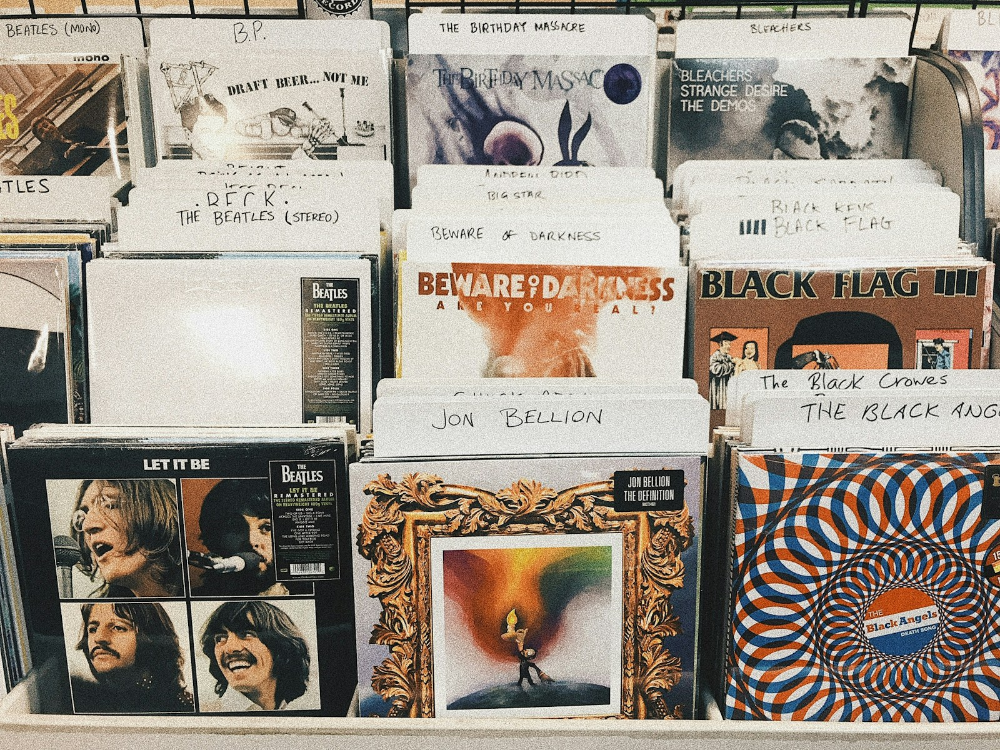

LATEST
STORIES
ISSUE 000 / 2026
自分の声で、自分の時代を歌う。

ライブハウスから始まる、新しいチャプター。
光と音、その一瞬を記録する。
手触りのある音楽が、また新しい。
ABOUT CHAPTER:0
完成された物語より、始まる直前の衝動を。私たちは、次の時代の第0章を記録する。
若者の今を、記録する。
まだ名前のないカルチャーの、その瞬間へ。

完成された物語より、始まる直前の衝動を。私たちは、次の時代の第0章を記録する。